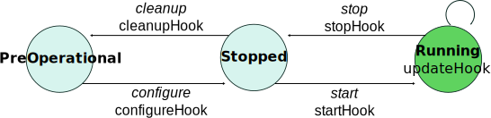
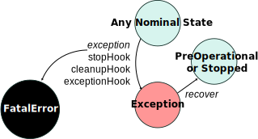

Lifecycle State Machine
While the component interface tells how to communicate with a component, the lifecycle state machine defines how a component can be controlled at runtime. All Rock components share the same state machine, which is what allows the generic Syskit integration.
Every transition in this state machine is given a hook, that is a C++ method that will be called when the component should be performing the transition. In the diagrams below, the transition is in italic and the corresponding hook name in plain (for instance the hook for configure is configureHook).
The nominal RTT state machine
What follows is the nominal state machine. On each state transition, the italic names are the transition names, and the non-italic name the name of the method that will be called on the component so that it does something, i.e. the ones that you – the component developer – must implement if something is needed for a particular transition.
The configureHook() and startHook() methods may return false, in which case
the transition is refused. Throwing an exception will have the same effect.

Configure and Start
As its name implies, the transition between PreOperational and Stopped is meant
to encapsulate the need for complex and/or costly configuration. For instance,
trying to open and configure a device (which can take very long). To give you
another example, in hard realtime contexts, it is expected that startHook() is
hard realtime while configureHook() does not need to be.
There are two additional hard constraints:
1. because of assumptions within Syskit, the
configureHook() is the only place where dynamic ports can be created (and
cleanupHook() the place where they must be destroyed).
2. a component that becomes unused will only be stopped by Syskit, not cleaned up
(that is, "de-configured"). For this reason, any operation that needs to be done
in a stop/start cycle must be done within the stopHook and startHook
In summary:
- place in
configureHookas much setup as possible that leaves the component in an inactive state (essentially, not using CPU resources). - do not put anything that would require to be redone after a stop
- place the rest of the initialization code in
startHook - undo everything that
startHookdoes instopHook - undo everything that
configureHookdoes incleanupHook
Note the needs_configuration statement within the file generated by
rock-create-orogen allowed to control whether the component's requires a
configure step or not. This is still here for historical reasons. All new
components should have it.
Error representation

Errors are represented in the way depicted on the left. The exception state is used to represent errors that demand the component to stop, but can be recovered from by restarting it. The fatal error state, however, is a terminal state: there is no way to get out of it except by restarting the component's process.
The components will automatically transition from any state to Exception if a
C++ exception is "leaked" by one of the hooks (i.e. uncaught exception).
Because of such a transition, the stopHook and cleanupHook will be called
before getting into Exception. In addition, one may transition manually to
the exception state by calling exception() from within the code. Note that
exception() behaves as a normal function, i.e. will not interrupt the flow
of the method it is in. Make sure you return after the exception:
void Task::updateHook()
{
if (something_went_wrong) {
return exception();
}
// Without the 'return', the execution would continue as if everything was
// alright
}
If, while going into Exception, another C++ exception is caught, the component will go into Fatal. In general, there should be no reason to transition to fatal manually.
Extending the state machine
oroGen offers a way to have a more fine-grained reporting mechanism for components to their coordination layer. This mechanism is based on the definition of sub-states for each of the runtime and terminal states of the task context state machine: Running, Exception and Fatal.
These sub-states are declared in the task_context block of the oroGen specification:
task_context "MotionTask" do
# Sub-states of Running (nominal operations)
runtime_states 'GOING_FORWARD', 'TURNING_LEFT'
# Sub-states of Exception (non-nominal end)
exception_states 'BLOCKED', 'SLIPPING'
# Sub-states of Fatal (not recoverable error)
fatal_states 'TOTALLY_BROKEN'
end
On the C++ side, this mechanism is available through two things:
- a States enumeration that defines all the states in a manner that is usable in the code
- the
state(States),exception(States)andfatal(States)methods that allow to declare state changes in the C++ code.
For instance, if the updateHook() detects that the system is blocked, it would do
void MotionTask::updateHook()
{
// code
if (blocked)
{
exception(BLOCKED);
return;
}
// code
}
All these generate notifications can be reacted on at the Syskit level to change
the system's behavior. Because each of these calls generate a notification, it is
good practice to avoid transitioning multiple time to the same runtime state. Calls
to state() can be guarded to avoid this:
if (state() != GOING_FORWARD)
state(GOING_FORWARD);